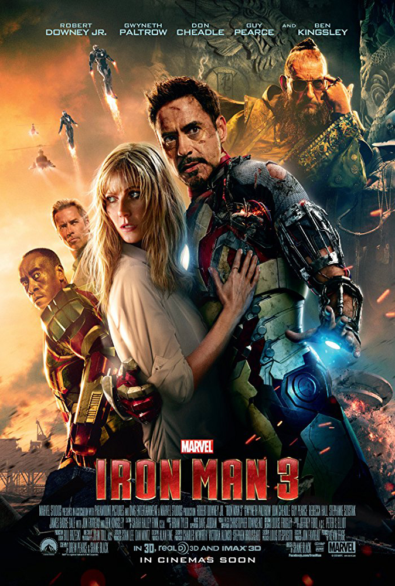

\

Iron Man III 2013
Trong tập 3 này, mối hiểm họa mà Stark phải đối đầu lại đến từ quá khứ của anh, khi 12 năm trước anh đã đẩy một nhà khoa học có tên Aldrich Killian (Guy Pearce) vào tâm trạng tuyệt vọng, để rồi giờ đây hắn trở lại đầy mạnh mẽ. Thứ mà Killian nắm trong tay là công nghệ sinh học Extremis bí ẩn có thể biến con người thành những chiến binh siêu hạng. Sự nguy hiểm còn được nhân đôi khi cùng lúc đó, tên khủng bố Mandarin (Ben Kingsley) của nhóm Thập Nhẫn (từng bắt cóc Tony Stark ở tập một) đã công khai lộ diện, gây ra những cuộc khủng bố rúng động thế giới. Ở thế gọng kìm giữa hai kẻ thù nguy hiểm, Stark còn bị buộc phải rời xa những người thân yêu và các bộ giáp quen thuộc...